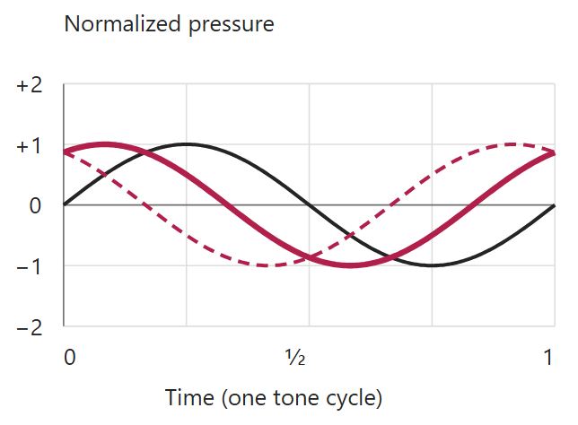
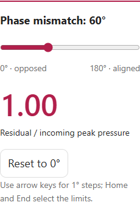
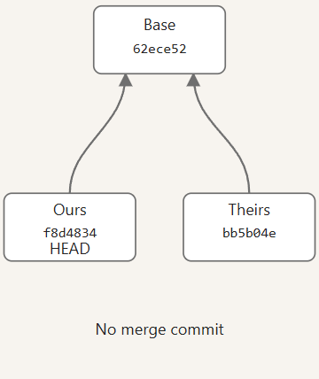
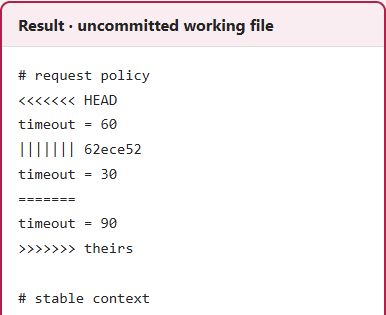
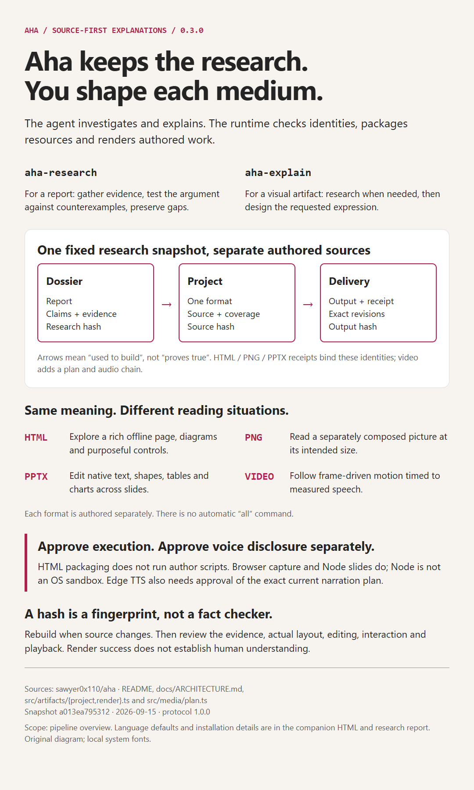
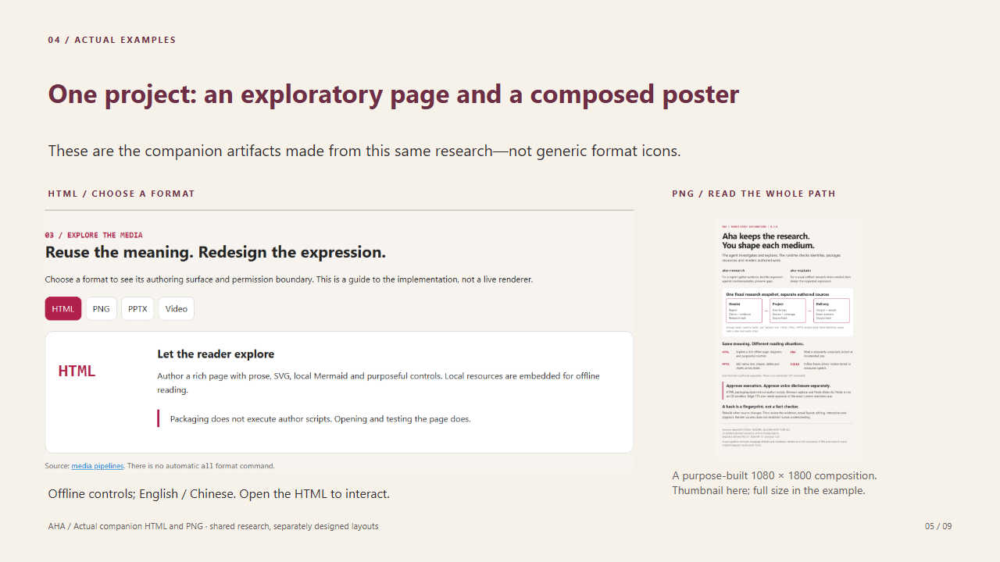

A difficult question.
A visual explanation.
Research it deeply. Help someone else understand it.
The rumble fades.
Why can you still
hear voices?
An existing HTML explanation pairs a diagram with a phase-mismatch slider.
The reader can explore the model—not just read an answer.
READ THE EXAMPLE IN TWO STEPS
1. Compare the pressure curves 2. Inspect the control

Existing English HTML, at 60° phase mismatch. Ideal model, not a headphone measurement. Screenshots are static.
Why can a merge
bring back a
reverted change?
Another HTML example lets readers compare three recorded outcomes.
History, files and results appear together.
READ THE SAVED CASE IN TWO STEPS
1. Read branch history2. Compare the saved result

Existing English HTML: saved conflict history and a cropped working-file excerpt. Not a live Git run.
Start with the question and the reader.
1. Investigate
Read sources.
Check competing answers.
Keep evidence and gaps.
2. Design
Choose the explanation.
Write for the audience.
Author the selected medium.
3. Deliver
A usable artifact.
Editable source.
Research you can revisit.
aha-research for a report. aha-explain for a visual artifact, with research when needed.
Explore. Scan. Present. Watch.
HTML / Explore
Try controls and inspect diagrams.

PNG / Scan
Read one purpose-built visual.

PPTX / Present
Edit native text and diagrams.

Video / Watch
Follow motion with narration.
Existing examples: ANC HTML, Aha PNG and PPTX. Each requested medium is authored separately; not automatic conversion.
Research the question.
Design the explanation.
Give people something they can use.
Sources and the finished work still need review. Clear presentation is not proof that every claim is true.